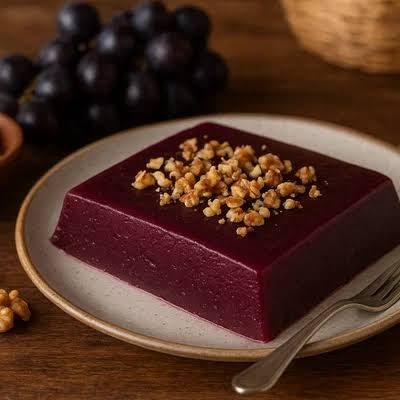

PELAMUSCHI-Georgischer Traubenpudding
Pelamuschi ist ein traditioneller georgischer Pudding aus Traubensaft und Mehl,
fest wie Schnittpudding und angenehm fruchtig-säuerlich. Er kommt ganz ohne Eier
aus und wird mit Nüssen verfeinert. Lauwarm oder gekühlt ist er ein einfaches,
aber besonderes Dessert, das sich gut vorbereiten lässt

Zutaten
| 1 |
L |
Traubensaft |
| 200 |
g |
Maismehl |
| 200 |
g |
Zucker |
| 100 |
g |
Wallnüssen |
Zubereitung
- Saft vorbereiten:Eine Hälfte des Traubensaftes
mit dem Maismehl und dem Zucker
in einer Schüssel glatt rühren,
sodass keine Klumpen entstehen
- Erhitzen:Die zweite Hälfte des Traubensaftes in einem
Topf auf dem Herd erhitzen
- Andicken:Die Saft-Mehl-Mischung langsam
unter ständigem Rühren in den warmen
Traubensaft im Topf gießen.
- Aufkochen:Aufkochen: Unter ständigem Rühren auf kleiner
bis mittlerer Flamme aufkochen lassen,
bis die Masse andickt und eine puddingartige Konsistenz erreicht.
- Abkühlen:Den Topf vom Herd nehmen, den Pudding in kleine Schüsseln oder
auf flache Teller gießen und vollständig auskühlen lassen
- Servieren:Vor dem Servieren mit Walnüssen garnieren